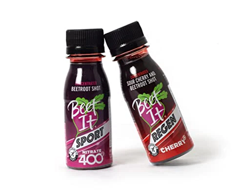

Dietary nitrates, are most commonly found in beets and beetroot juice. There are benefits to both chronic, ingesting nitrates for a few days leading up to an event, and acute, ingesting nitrates the day of an event, can improve performance. Dietary nitrates can improve exercise economy, how efficiently the body exercise, and exercise capacity. Dietary nitrates work best for sports that are primaraly aerobic, such as cycling or running.

